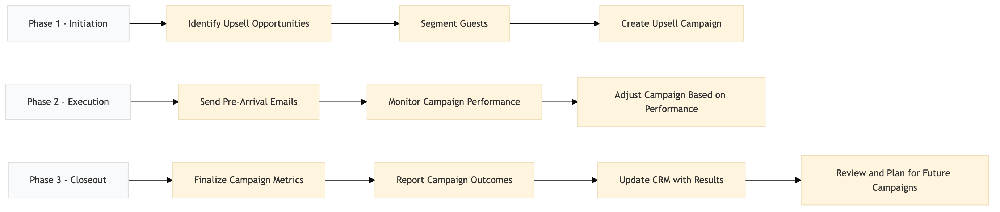

| Role | Steps |
|---|---|
| Revenue Manager | 1.1 1.2 1.3 2.2 2.3 3.1 3.2 3.3 3.4 |
| Marketing Manager | 2.1 |
| Step | Name | Role | System | Input | Output | KPI | Dec? | Exc? | Pain Point / Risk |
|---|---|---|---|---|---|---|---|---|---|
| 1.1 | Identify Upsell Opportunities | Revenue Manager | Oracle OPERA Cloud | Reservation details from Oracle OPERA Cloud | Upsell opportunity report | Less than 30 minutes to generate the report | N | Y | Identifying upsell opportunities without historical data can be challenging. |
| 1.2 | Segment Guests | Revenue Manager | Oracle OPERA Cloud, Marriott Bonvoy CRM | Upsell opportunity report | Guest segmentation list | Less than 45 minutes to segment guests | N | Y | Accurate segmentation based on guest preferences and behavior can be complex. |
| 1.3 | Create Upsell Campaign | Revenue Manager | Oracle OPERA Cloud, Book4Time | Guest segmentation list | Upsell campaign plan | Less than 60 minutes to create the campaign | N | Y | Creating a compelling and personalized upsell campaign can be time-consuming. |
| 2.1 | Send Pre-Arrival Emails | Marketing Manager | Oracle OPERA Cloud, Book4Time | Upsell campaign plan | Sent email confirmation | Less than 2 hours to send emails | N | Y | Ensuring high open rates and engagement from pre-arrival emails can be challenging. |
| 2.2 | Monitor Campaign Performance | Revenue Manager | Oracle OPERA Cloud, Book4Time | Sent email confirmation | Campaign performance report | Less than 1 hour to generate the report | Y | N | Real-time monitoring and analysis of campaign performance are crucial. |
| 2.3 | Adjust Campaign Based on Performance | Revenue Manager | Oracle OPERA Cloud, Book4Time | Campaign performance report | Adjusted campaign plan | Less than 1 hour to adjust the campaign | Y | N | Quickly responding to changes in guest behavior and preferences is essential. |
| 3.1 | Finalize Campaign Metrics | Revenue Manager | Oracle OPERA Cloud, Book4Time | Adjusted campaign plan | Campaign metrics report | Less than 2 hours to finalize metrics | N | Y | Accurately measuring the impact of upsell campaigns can be difficult. |
| 3.2 | Report Campaign Outcomes | Revenue Manager | Oracle OPERA Cloud, Book4Time | Campaign metrics report | Campaign outcomes presentation | Less than 1 hour to prepare the presentation | N | Y | Communicating campaign results effectively to stakeholders is important. |
| 3.3 | Update CRM with Results | Revenue Manager | Oracle OPERA Cloud, Marriott Bonvoy CRM | Campaign outcomes presentation | Updated guest profiles in CRM | Less than 2 hours to update CRM | N | Y | Maintaining accurate and up-to-date guest information in the CRM is crucial. |
| 3.4 | Review and Plan for Future Campaigns | Revenue Manager | Oracle OPERA Cloud, Book4Time | Updated guest profiles in CRM | Future campaign strategy document | Less than 3 hours to review and plan | N | Y | Developing a strategic approach for future upsell campaigns based on past results is complex. |
A structured process document for managing a pre-arrival upsell campaign at a full-service Marriott hotel using Oracle OPERA Cloud PMS and other key Marriott systems.